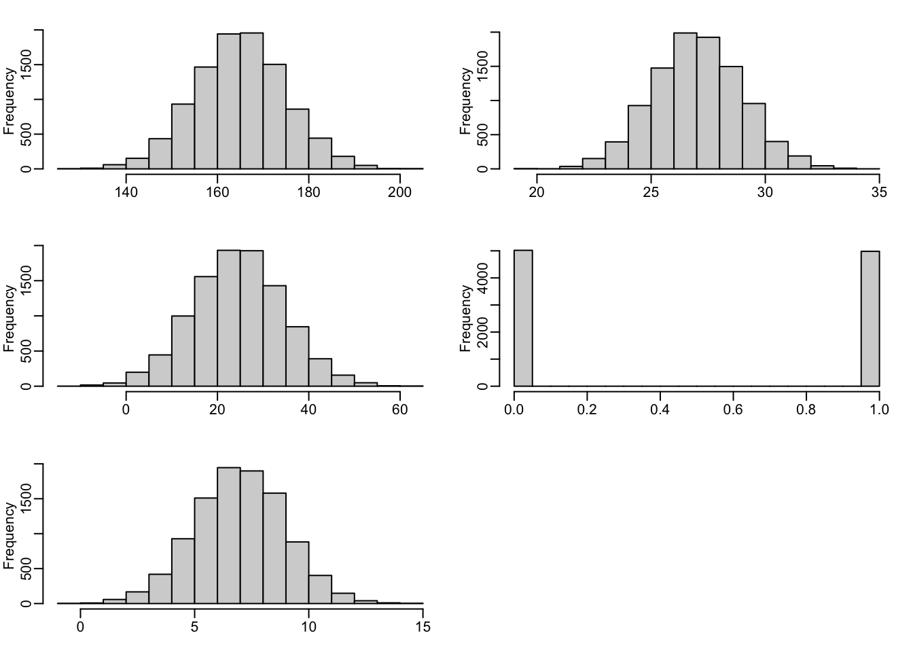

Fundamentals of Data Analysis in R
2022-08-15
Chapter 1 Introduction to Programming in R
R is a programming language designed to read, write and manipulate data. It is especially suitable for performing statistical tests and modelling data. This session illustrates some of the most important tasks which can be performed in R.
1.1 Calculations in R
The easiest way to use R is as a simple calculator. For example, you can calculate the sum, difference or product of two or more numbers in R as you would in any other calculator:
2+2## [1] 43-1## [1] 23*5## [1] 156/3## [1] 2However, R is also able to perform more complex computations, such as those in a scientific calculator. For instance, one can use R to calculate roots, logarithms or results from exponential operations. This is done via R “functions”. Functions have a name (called the function), followed by two parentheses. Inside these parentheses lie the arguments of the function.
For example, the command “sqrt(9)” applies the sqrt function (which calculates the squared root) to its argument (number 9):
sqrt(9)## [1] 3Some functions accept more than one argument. For example, the function “log” (which calculates logarithms) accepts two arguments: the number we are aplying logarithm to, and the base of the logarithm: log(100, base=10) calculates the log10 of 100.
log(x=100, base=10)## [1] 2Arguments can be specified in two ways:
- positional: R knows which argument is which because they appear in a certain order
- explicit: We specify the name of the argument follwed by an equality sign (=) and the desired value.
For example, the following command has the same result as before: calculating the log10 of 100. However, we do not need to specify which is x and which is base, since R will immediately infer this from their position (x always goes first and base always goes second).
log(100,10)## [1] 2If you do not know what a function does or how to use it, you can access the “help” information using a question mark:
?logThis helps exists for any R function.
1.2 Variable assignation in R
Most of the times, we will need to use R as something more than just a scientific computer: we might want to keep track of the things we have done and store our results in the computer memory (RAM). R allows us to do that by assigning values to variables.
In R variables are always object. We analyse see what this means below, but for now we should remember that a variable has three characteristics:
A name: We can call our variables with whichever name we want, with only three exceptions: 1.1 Variable names cannot start with a number, they need to start with a letter 1.2 Variable names cannot start with a dot 1.3 You should not name the variables with any “protected name”. A protected name is a word which by default already means something in R. The most common example are the letters F and T, which in R mean TRUE and FALSE, two logical values 1.4 Variable names are case sensitive: ST, St, sT and st will be four different variables
A type: variables in R can be text, numbers or qualitative variables. We will discuss this in more detail below.
A value: this is the actual piece of information we are “setting” that variable to be.
To assign a value to a variable we use the following operator: <- These two symbols (<-) represent an arrow pointing from right to left and in English mean “Let’s assign the value in the right to the word in the left”.
For example:
A <- log(356,2)Means “Let’s set A to be the log2 of 356” (log2 of 356 is simply a number, close to 8.5).
Now this number has been stored in RAM under the name “A”. We can access it by simply tying A in the console:
A## [1] 8.475733Because it is so common in other languages, now R also accepts the following syntax, which means the exact same:
A = log(356, 2)
A## [1] 8.4757331.3 Data types in R
As mentioned above, in R information is stored in the form of objects (variables) which can belong to several data types. Let’s take a look at the different data types available in R
1.3.1 Numeric variables
The simplest data types are those which consist of a single element. This element can, for example, be a number. Numbers in R are called “numeric variables”.
There are two types of numbers: integers (non-fractional) and fractional numbers. In computers, fractional numbers are stored as “Floating point numbers”, which is a type of scientific notation.
Our previous variable “A”” is a number (specifically, a floating point number). To verify this, we can use the function class(), which tells us the data type of a variable.
class(A)## [1] "numeric"If we want to transform this number into an integer, we can use the function as.integer() as follows:
as.integer(A)## [1] 8Note that now we don’t get 8.4757… but only 8. To transform the fractional number into a integer, R has chopped all the numbers after the decimal point.
Let’s look at the class of this new object:
class(as.integer(A))## [1] "integer"We see that it is no longer a “numeric” variable, but an “integer”.
1.3.2 Character variables
Sometimes we will need to work with text. For example, we might want to store a series of words. Texts in R are “character” variables. To tell R that something should be a character variable we put it in quotes:
B <- "word"Let’s look at the value and clas of B:
class(B)## [1] "character"B## [1] "word"B is a character variable with value “word”.
Be careful of always having the correct data type! Often errors in R come from thinking we have a number when we actually have a text, or vice versa. For examle, the following variable contains number 2, but in a text format:
A <- "2"class(A)## [1] "character"A## [1] "2"If we try to add it two number 2 we will get an error, since we are trying to add a character variable to a numeric variable
A + 2We can convert characters to numbers using the function as.numeric() or viceversa using the function as.character(). For instance, let’s convert A to a numeric format:
A <- as.numeric(A)If we try to add 2 to this number, we will see that the error has disappeared:
A + 2## [1] 4Inside the computer memory, R character variables are stored as ASCII symbols.
1.3.3 Logical variables
Often we will need to know if something is true or false. For example, is our variable “A” bigger than 3?
A > 3## [1] FALSEOr, is our variable a number?
is.numeric(A)## [1] TRUEThe answer to all these questions comes in a binary format: YES or NO, TRUE or FALSE. These binary (boolean) values are stored in R as “Logical” variables. The importance of logical variables will become apparent as we learn more about R.
1.3.4 Categorical variables (factors)
Sometimes our data will not consists of numbers of words, but rather of categories or groups. For example, we might have data on female and male individuals: which of them is which? Or we might have data on people from Mexico, the UK and France: which of them is which? This type of information is stored in R as “factors”.
To create a factor, we use the function factor(). For example, the following command creates a list of factors for individuals from three nationalities: two are Mexican, 3 British and 2 French.
Don’t pay much attention to the c() operator yet, this will be explained below.
A <- factor(c("MEX", "UK", "UK", "FR", "MEX", "FR", "UK"))A## [1] MEX UK UK FR MEX FR UK
## Levels: FR MEX UKNotice how the factor has two components: the levels and the values. This is because factors are actually stored as numbers (integers), not as words! For example, in this case R created the following equivalence:
Word Number FR 1 MEX 2 UK 3
So that each Frenck individual is given a number 1, each Mexican a number 2 and each British a number 3. Numbers are easier to store than words! R ordered our labels simply alphabetically. We can verify this with the mode function:
mode(A)## [1] "numeric"Indeed, our data is made of numbers! In fact, we can obtain this numbers using as.numeric():
as.numeric(A)## [1] 2 3 3 1 2 1 3On the other hand, we can easily transform this to words using as.character():
as.character(A)## [1] "MEX" "UK" "UK" "FR" "MEX" "FR" "UK"More generally, the levels of a factor can be accessed using the “levels()” function:
levels(A)## [1] "FR" "MEX" "UK"Factors are extremely important in statistics, because they allow us to split our data in groups and look for differencs between them.
1.4 Working with multiple numbers in R
Single numbers or words are not very interesting, and they will hardly ever be the centre of an R analysis. What we really need is a way to store tens, hundreds or thousands of numbers and words. In R, this can actually be done very easily using objects called “vectors”.
1.4.1 Vectors
A series of values can be stored in a single variable in the form of a vector. The easiest way to define a vector in R is using the “c()” operator (“c” stands for create or catenate) as follows:
vec <- c(1,2,3,4,5)Since all of the members of our vector are numbers, the class of this vector is numeric:
vec## [1] 1 2 3 4 5class(vec)## [1] "numeric"Vectors also have an atribute called “length” (number of elements in the vector) which can be accessed with the length() operator:
length(vec)## [1] 5To retrieve specific elements from a vector, we can use the [] operator. Inside the brackets we should include the index (position) of the element we want to access. R always indexes its objects with base 1 (as opposed to base 0), which means that the first element with have index 1, the second index 2, and so forth.
To access the second element of our vector, we do the following:
vec[2]## [1] 2If we want to create a vector of consecutive numbers (a sequence) without typing each of them, we can use the colon “:” operator, as follows:
1:5## [1] 1 2 3 4 5The same result can be achieved using the seq() function. When using seq() we need to specify the starting and ending point of the sequence:
seq(1,10)## [1] 1 2 3 4 5 6 7 8 9 10It is possible to add a third argument to the seq() function, which specifies the interval/increment size of the sequence. For example, the following function generates a sequence of numbers from 1 to 10 in increments of 2:
seq(1,10,2)## [1] 1 3 5 7 9Vectors can also store character variables. For example, we can define a vector which contains animal names:
vec2 <- c(A="dog",B="cat",C="rabbit")
vec2## A B C
## "dog" "cat" "rabbit"The class of this vector will be “character”:
class(vec2)## [1] "character"Note that when I defined the vector I assigned a name to each of its elements (in this case A, B, and C). The name of a vector’s elements can be accessed using the names() function:
names(vec2)## [1] "A" "B" "C"A named element in a vector can be accessed directly by its name:
vec2["C"]## C
## "rabbit"Names can also be assigned after the vector has been created. For example, let’s have a look at our first vector. This vector does not contain any names:
vec## [1] 1 2 3 4 5names(vec)## NULLWe can assign names to it using the names() function and the ‘<-’ operator as follows:
names(vec) <- c("one","two","three","four","five")Now each element of vec is indexed by a name:
vec## one two three four five
## 1 2 3 4 5vec["two"]## two
## 2Sometimes we will need to create vectors in which a number (or a group of numbers) is repeated over and over again. This can be easily done using the rep() function (“rep” standing for replicate). For example, the following function will create a vector that contains the values 1 and 2, repeated 5 times:
rep(c(1,2),5)## [1] 1 2 1 2 1 2 1 2 1 2rep() can also be used to replicate the content of a vector. For example, the following line creates a vector containing three copies o the content of vec2:
rep(vec2,3)## A B C A B C A B C
## "dog" "cat" "rabbit" "dog" "cat" "rabbit" "dog" "cat" "rabbit"1.4.2 Lists
Often we will need to store elements of different classes into a single variable. For instance, imagine you want to store numbers and text in the same variable. You can try to assign them to a vector as follows:
myvector <- c(1,3,6:3,"cat","dog")However, the result from this operation is not what we expected:
myvector## [1] "1" "3" "6" "5" "4" "3" "cat" "dog"The quotes indicate us that all the variables are text! In fact, R has converted all the numbers to characters:
class(myvector)## [1] "character"This is because a vector can only store values which all belong to the same class.
If we want to store elements of multiple data types in a single variable, we use a “list”. Lists are defined using the list() function:
mylist <- list(A=1,B=3,C=6:3,D="cat",E="dog")Note how each element is stored independently and can be of a different class and have different dimentions. In this case, the element “C” is itself a vector of length 4.
mylist## $A
## [1] 1
##
## $B
## [1] 3
##
## $C
## [1] 6 5 4 3
##
## $D
## [1] "cat"
##
## $E
## [1] "dog"If the list contains names, then each element can be accessed by its name using the $ sign:
mylist$D## [1] "cat"This is the same as accessing the element using its index:
mylist[[4]]## [1] "cat"Note that for lists you have to use the double bracket operator [[]] instead of the single bracket used for vectors.
Each of the objects in a list can have different classes and modes:
class(mylist$A)## [1] "numeric"class(mylist$C)## [1] "integer"class(mylist$D)## [1] "character"1.4.3 Matrices
Sometimes even vectors and lists will not be enough for storing data. This is the case when one deals with tables of data or matrices. For example, we might have information on “cancer samples” and “healthy samples” from a hospital, and some measurements on each of them. We will want to store at least two variables:
- The cancer and healthy labels (this can be, for instance, a factor)
- The measurements
To manipulate this kind of data structures we can use matrices and data frames.
A matrix object consists of “n” rows and “m” columns. To create a matrix in R simply use the “matrix()” function and specify the data you want to fill the matrix with. For example, this line creates a sequence of numbers from 1 to 10 and stores them in a matrix format:
matrix(1:10)## [,1]
## [1,] 1
## [2,] 2
## [3,] 3
## [4,] 4
## [5,] 5
## [6,] 6
## [7,] 7
## [8,] 8
## [9,] 9
## [10,] 10Note that by default matrix() assumes that you only want one column. If you need the data to be stored in multiple columns, simply specify the number of rows and columns you need:
matrix(1:10,nrow=5,ncol=2)## [,1] [,2]
## [1,] 1 6
## [2,] 2 7
## [3,] 3 8
## [4,] 4 9
## [5,] 5 10Importantly, R always assumes you want to arrange the data in a matrix “by column”. This means, starting from the top left and going down the first column, then the second one, and so forth. If you need the data to be allocated row by row, simply set the byrow argument to TRUE.
matrix(1:100,nrow=10,ncol=10,byrow=TRUE)## [,1] [,2] [,3] [,4] [,5] [,6] [,7] [,8] [,9] [,10]
## [1,] 1 2 3 4 5 6 7 8 9 10
## [2,] 11 12 13 14 15 16 17 18 19 20
## [3,] 21 22 23 24 25 26 27 28 29 30
## [4,] 31 32 33 34 35 36 37 38 39 40
## [5,] 41 42 43 44 45 46 47 48 49 50
## [6,] 51 52 53 54 55 56 57 58 59 60
## [7,] 61 62 63 64 65 66 67 68 69 70
## [8,] 71 72 73 74 75 76 77 78 79 80
## [9,] 81 82 83 84 85 86 87 88 89 90
## [10,] 91 92 93 94 95 96 97 98 99 100Just as vectors have names, the columns and rows of a matrix can also be labelled. These labels can be specified using the “dimnames” argument. dimnames has to be a list with two elements, the name of rows and the name of columns.
Let’s craete a 100 x 5 matrix containing numbers from 1 to 500. We name the rows of the matrix with numbers and the columns with letters.
mat <- matrix(1:500,nrow=100,ncol=5,
dimnames=list(1:100,c("A","B","C","D","E")))The funciton “head()” displays the top elements of the matrix
head(mat)## A B C D E
## 1 1 101 201 301 401
## 2 2 102 202 302 402
## 3 3 103 203 303 403
## 4 4 104 204 304 404
## 5 5 105 205 305 405
## 6 6 106 206 306 406The function “tail()” displays the bottom elements
tail(mat)## A B C D E
## 95 95 195 295 395 495
## 96 96 196 296 396 496
## 97 97 197 297 397 497
## 98 98 198 298 398 498
## 99 99 199 299 399 499
## 100 100 200 300 400 500You can use “colnames()” and “rownames()” to access the row and column names of a matrix:
colnames(mat)## [1] "A" "B" "C" "D" "E"rownames(mat)## [1] "1" "2" "3" "4" "5" "6" "7" "8" "9" "10" "11" "12" "13" "14" "15" "16" "17" "18" "19" "20" "21" "22" "23" "24" "25" "26" "27" "28"
## [29] "29" "30" "31" "32" "33" "34" "35" "36" "37" "38" "39" "40" "41" "42" "43" "44" "45" "46" "47" "48" "49" "50" "51" "52" "53" "54" "55" "56"
## [57] "57" "58" "59" "60" "61" "62" "63" "64" "65" "66" "67" "68" "69" "70" "71" "72" "73" "74" "75" "76" "77" "78" "79" "80" "81" "82" "83" "84"
## [85] "85" "86" "87" "88" "89" "90" "91" "92" "93" "94" "95" "96" "97" "98" "99" "100"Finally, it is possible to access specific elements in a matrix using either their names or their indexes. Note that both indexes (the column and row number) need to be specified.
mat[1,4]## [1] 301mat[1,"D"]## [1] 301If the column number is left empty, then R retrieves all the elements in that row (and vice versa).
mat[1,]## A B C D E
## 1 101 201 301 401For instances, the following line retrieves all elements in the column labelled “D” and calculates the average (mean):
mean(mat[,"D"])## [1] 350.5Matrices are very useful, since they allow the user to perform operations to each of its rows or columns.
Another way of building matrices is by concatenating multiple vectors. The vectors in question have to be of the same length. Let’s create two different vectors with length 10 each:
A <- seq(1:10)
B <- seq(11:20)Now let’s combine them. We can do this using the “cbind()” function (cbind standing for “column binding”).
cbind(A,B)## A B
## [1,] 1 1
## [2,] 2 2
## [3,] 3 3
## [4,] 4 4
## [5,] 5 5
## [6,] 6 6
## [7,] 7 7
## [8,] 8 8
## [9,] 9 9
## [10,] 10 10One can verify that this new object is a matrix
class(cbind(A,B))## [1] "matrix" "array"The columns of this matrix are named after the names of each individual vector
colnames(cbind(A,B))## [1] "A" "B"Vectors can also be used as two rows of a matrix, insted of two columns. To do this, we use rbind(), which stands for “row binding”.
rbind(A,B)## [,1] [,2] [,3] [,4] [,5] [,6] [,7] [,8] [,9] [,10]
## A 1 2 3 4 5 6 7 8 9 10
## B 1 2 3 4 5 6 7 8 9 101.4.4 Data frames
As with vectors, often we will need to store elements of different classes into a single matrix. For instance, imagine you want to store a list of names along with an identifier for each name. Let’s try to store this data as a matrix:
First we generate a vector of IDs, then a vector of names:
ID <- 1:6
Name <- c("Jimmy","Amanda","Glenn","Toby","Ren","Amanda")Finally, we bind both columns:
names <- cbind(ID,Name)Note that everything has been transformed to a character form (hence the quotes):
names## ID Name
## [1,] "1" "Jimmy"
## [2,] "2" "Amanda"
## [3,] "3" "Glenn"
## [4,] "4" "Toby"
## [5,] "5" "Ren"
## [6,] "6" "Amanda"This is because, just as a vector, a matrix can only store values which all belong to the same class.
To store objets of several different classes in a single object, we need to build a data frame. To create a data frame in R simply use the data.frame() function as follows:
names <- data.frame(ID,Name)
names## ID Name
## 1 1 Jimmy
## 2 2 Amanda
## 3 3 Glenn
## 4 4 Toby
## 5 5 Ren
## 6 6 AmandaNote how now each column belongs to a different class:
class(names$ID)## [1] "integer"class(names$Name)## [1] "character"However, the names have been stored as factors instead of characters. This is because R always assumes that the text in a data.frame represents factors. To keep them as characters instead, simply set the stringsAsFactors paramteres to FALSE:
names <- data.frame(ID,Name, stringsAsFactors=FALSE)Now we have a numeric and a character column:
class(names$ID)## [1] "integer"class(names$Name)## [1] "character"Data frames are useful because it is easy to perform operations on each row or column individually. For example, we can now use “table()” to tabulate the names and find out if any of them is repeated more than once.
table(names$Name)##
## Amanda Glenn Jimmy Ren Toby
## 2 1 1 1 11.5 Manipulating data in R
As a programming language, R has been designed to optimally work with vectors, lists, matrices and data frames, as will be illustrated in the following examples.
Let’s create a data frame containing the name of 6 individuals as well as their height, body mass index (BMI), age and hours of sleep. Since we do not have access to such dataset, we “simulate it” using a “random” number generator. We will not discuss random number generation in R just now, but we’ll return to it later.
Let’s first define a vector of names:
names <- c("Jimmy","Amanda","Glenn","Toby","Ren","Amanda")Next, we generate 6 random numbers that represent height in centimetres (a height for each individual). To do this we use rnorm(), which is a function that generates random numbers with mean (average) of 165 cm and standard deviation (a measure of spread which we will learn about later) of 10cm.
heights <- rnorm(6,mean=165,sd=10)We repeat this process for BMI and sleep hours (each of them will have its own mean and standard deviaiton).
BMIs <- rnorm(6,mean=27,sd=2)
sleep <- rnorm(6,mean=7,sd=2)Now, we create a vector of ages. In this case, we simply invent the age of our fictional characters:
age <- c(21,23,23,40,19,35)Finally, we combine everything into a single data.frame object:
dat <- data.frame(names,heights,BMIs,age,sleep)Let’s have a look at it:
dat## names heights BMIs age sleep
## 1 Jimmy 183.1423 28.16605 21 8.424872
## 2 Amanda 165.0718 24.00776 23 7.344862
## 3 Glenn 148.0559 24.59611 23 8.067157
## 4 Toby 180.7543 26.73520 40 7.626297
## 5 Ren 162.6167 27.78964 19 6.636333
## 6 Amanda 168.0388 28.41036 35 5.209633Using the function “dim()” we verify the dimensions of this data set
dim(dat)## [1] 6 5Let’s now look closer into a family of functions called “apply”. These functions are designed to repeat an operation across all elements of a data frame, list or vector.
In order to use apply(), we specify the following arguments:
- X = matrix or data frame where our data is stored
- MARGIN = whether we want the operation to be repeated per row (1) or per column (2)
- FUN = operation we want to perform
In this case, we want to find out the class of each of the columns in the data frame “dat”:
apply(X=dat, MARGIN=2, FUN=class)## names heights BMIs age sleep
## "character" "character" "character" "character" "character"Now we combine apply() with function “Summary”, which takes a group of numbers and summarises them in six parameters: minimum, mean, median, maximum and interquartile ranges.
apply(X=dat[,2:5], MARGIN=2, FUN=summary)## heights BMIs age sleep
## Min. 148.0559 24.00776 19.00000 5.209633
## 1st Qu. 163.2304 25.13088 21.50000 6.813465
## Median 166.5553 27.26242 23.00000 7.485579
## Mean 167.9466 26.61752 26.83333 7.218192
## 3rd Qu. 177.5754 28.07195 32.00000 7.956942
## Max. 183.1423 28.41036 40.00000 8.4248721.5.1 Working with lists of data frames
Data frames can themselves be grouped into lists or higher-order structures. To illustrate this, let’s create a new fictional dataset of heights, BMIs, ages and sleep hours. Now let’s also include the variable sex. We will simulate randm data for 10,000 individuals (Yes, then thousand!) and will name each individual with a numeric ID instead of a name (coming up with 10000 fictional names would be too time consuming and require too much imagination!):
IDs <- seq(1,10000)
heights <- rnorm(10000,mean=165,sd=10)
BMIs <- rnorm(10000,mean=27,sd=2)
ages <- round(rnorm(10000,mean=25,sd=10))
sex <- sample(x=c(0,1),size=10000,replace=TRUE)
sleep <- rnorm(10000,mean=7,sd=2)
dat2 <- data.frame(IDs,heights,BMIs,ages,sex,sleep)Let’s compare our first, smaller data set with the new data.
dat## names heights BMIs age sleep
## 1 Jimmy 183.1423 28.16605 21 8.424872
## 2 Amanda 165.0718 24.00776 23 7.344862
## 3 Glenn 148.0559 24.59611 23 8.067157
## 4 Toby 180.7543 26.73520 40 7.626297
## 5 Ren 162.6167 27.78964 19 6.636333
## 6 Amanda 168.0388 28.41036 35 5.209633head(dat2)## IDs heights BMIs ages sex sleep
## 1 1 167.1295 23.48994 24 0 5.694760
## 2 2 166.7796 26.02868 31 0 2.543716
## 3 3 163.8697 24.82922 34 0 9.108687
## 4 4 166.7887 28.74675 33 1 1.875554
## 5 5 174.0567 28.80829 16 1 2.501058
## 6 6 159.3937 23.51663 34 0 8.314209Under certain circumstances we will want to store both datasets together. For instance, maybe they are data from two different populations which we later want to compare. We can do this by creating a list of data frames:
database <- list(A=dat,B=dat2)Here, the element A of our list is the first data set, and the element B the second:
head(database$A)## names heights BMIs age sleep
## 1 Jimmy 183.1423 28.16605 21 8.424872
## 2 Amanda 165.0718 24.00776 23 7.344862
## 3 Glenn 148.0559 24.59611 23 8.067157
## 4 Toby 180.7543 26.73520 40 7.626297
## 5 Ren 162.6167 27.78964 19 6.636333
## 6 Amanda 168.0388 28.41036 35 5.209633head(database$B)## IDs heights BMIs ages sex sleep
## 1 1 167.1295 23.48994 24 0 5.694760
## 2 2 166.7796 26.02868 31 0 2.543716
## 3 3 163.8697 24.82922 34 0 9.108687
## 4 4 166.7887 28.74675 33 1 1.875554
## 5 5 174.0567 28.80829 16 1 2.501058
## 6 6 159.3937 23.51663 34 0 8.314209Now we can use another function of the apply family called “lapply” to repeat an operation in all the elements of a list (in this case, the list of data frames). We can combine lapply() with apply() to calculate the summary numbers of each column o both datasets. Let’s store the results in a new variable:
results <- lapply(database, function(l){
apply(X=l[,2:dim(l)[2]], MARGIN=2, FUN=summary)
})Note that the results variable is itself a list (since lapply generates a list output):
results## $A
## heights BMIs age sleep
## Min. 148.0559 24.00776 19.00000 5.209633
## 1st Qu. 163.2304 25.13088 21.50000 6.813465
## Median 166.5553 27.26242 23.00000 7.485579
## Mean 167.9466 26.61752 26.83333 7.218192
## 3rd Qu. 177.5754 28.07195 32.00000 7.956942
## Max. 183.1423 28.41036 40.00000 8.424872
##
## $B
## heights BMIs ages sex sleep
## Min. 127.8211 19.59680 -12.0000 0.0000 -0.5597662
## 1st Qu. 158.2283 25.70933 18.0000 0.0000 5.6587163
## Median 165.0022 27.00980 25.0000 0.0000 6.9829551
## Mean 164.9724 27.03470 25.0168 0.4981 6.9772389
## 3rd Qu. 171.6043 28.36951 32.0000 1.0000 8.3210660
## Max. 201.4211 34.21441 65.0000 1.0000 14.3471767class(results)## [1] "list"1.6 Extending R’s funcitonality with libraries
Sometimes the basic functions in R are not enough for the type of analysis we are interested in. In these cases, we can expand R’s functionality by installing additional groups of functions called “libraries”. A large proportion of R libraries are stored in the “Comprehensive R Archive Network” (CRAN) and can be installed using the “install.packages()” function followed by the name of the library.
The following line installs the libraries “rafalib” and “reshape2” from CRAN:
install.packages("rafalib")
install.packages("reshape2")rafalib contains a group of functions which facilitate data exploration and visualisation, while reshape2 contains functions to change the structure of data frames (reshape them).
Let’s load the libraries using library().
library(rafalib)
library(reshape2)Now we can use the function mypar() from “rafalib” to tell R to create a grid with 6 spaces. Then, we use apply() to plot histograms of each of the columns in our data frame data2 (element B in the “database” list”). We will discuss extensively what a histogram is in our next session, but for now let’s just think about it as a way to “see” our data.
mypar(3,2)
apply(X=database$B[,2:dim(database$B)[2]], MARGIN=2, FUN=hist, main="",xlab="")## $heights
## $breaks
## [1] 125 130 135 140 145 150 155 160 165 170 175 180 185 190 195 200 205
##
## $counts
## [1] 3 10 60 152 434 932 1466 1942 1956 1504 860 442 180 50 5 4
##
## $density
## [1] 0.00006 0.00020 0.00120 0.00304 0.00868 0.01864 0.02932 0.03884 0.03912 0.03008 0.01720 0.00884 0.00360 0.00100 0.00010 0.00008
##
## $mids
## [1] 127.5 132.5 137.5 142.5 147.5 152.5 157.5 162.5 167.5 172.5 177.5 182.5 187.5 192.5 197.5 202.5
##
## $xname
## [1] "newX[, i]"
##
## $equidist
## [1] TRUE
##
## attr(,"class")
## [1] "histogram"
##
## $BMIs
## $breaks
## [1] 19 20 21 22 23 24 25 26 27 28 29 30 31 32 33 34 35
##
## $counts
## [1] 4 2 36 151 395 926 1475 1988 1925 1497 956 400 189 45 10 1
##
## $density
## [1] 0.0004 0.0002 0.0036 0.0151 0.0395 0.0926 0.1475 0.1988 0.1925 0.1497 0.0956 0.0400 0.0189 0.0045 0.0010 0.0001
##
## $mids
## [1] 19.5 20.5 21.5 22.5 23.5 24.5 25.5 26.5 27.5 28.5 29.5 30.5 31.5 32.5 33.5 34.5
##
## $xname
## [1] "newX[, i]"
##
## $equidist
## [1] TRUE
##
## attr(,"class")
## [1] "histogram"
##
## $ages
## $breaks
## [1] -15 -10 -5 0 5 10 15 20 25 30 35 40 45 50 55 60 65
##
## $counts
## [1] 1 17 46 198 445 998 1558 1932 1926 1429 845 390 157 49 6 3
##
## $density
## [1] 0.00002 0.00034 0.00092 0.00396 0.00890 0.01996 0.03116 0.03864 0.03852 0.02858 0.01690 0.00780 0.00314 0.00098 0.00012 0.00006
##
## $mids
## [1] -12.5 -7.5 -2.5 2.5 7.5 12.5 17.5 22.5 27.5 32.5 37.5 42.5 47.5 52.5 57.5 62.5
##
## $xname
## [1] "newX[, i]"
##
## $equidist
## [1] TRUE
##
## attr(,"class")
## [1] "histogram"
##
## $sex
## $breaks
## [1] 0.00 0.05 0.10 0.15 0.20 0.25 0.30 0.35 0.40 0.45 0.50 0.55 0.60 0.65 0.70 0.75 0.80 0.85 0.90 0.95 1.00
##
## $counts
## [1] 5019 0 0 0 0 0 0 0 0 0 0 0 0 0 0 0 0 0 0 4981
##
## $density
## [1] 10.038 0.000 0.000 0.000 0.000 0.000 0.000 0.000 0.000 0.000 0.000 0.000 0.000 0.000 0.000 0.000 0.000 0.000 0.000 9.962
##
## $mids
## [1] 0.025 0.075 0.125 0.175 0.225 0.275 0.325 0.375 0.425 0.475 0.525 0.575 0.625 0.675 0.725 0.775 0.825 0.875 0.925 0.975
##
## $xname
## [1] "newX[, i]"
##
## $equidist
## [1] TRUE
##
## attr(,"class")
## [1] "histogram"
##
## $sleep
## $breaks
## [1] -1 0 1 2 3 4 5 6 7 8 9 10 11 12 13 14 15
##
## $counts
## [1] 3 8 58 167 419 927 1510 1945 1898 1580 882 402 147 40 10 4
##
## $density
## [1] 0.0003 0.0008 0.0058 0.0167 0.0419 0.0927 0.1510 0.1945 0.1898 0.1580 0.0882 0.0402 0.0147 0.0040 0.0010 0.0004
##
## $mids
## [1] -0.5 0.5 1.5 2.5 3.5 4.5 5.5 6.5 7.5 8.5 9.5 10.5 11.5 12.5 13.5 14.5
##
## $xname
## [1] "newX[, i]"
##
## $equidist
## [1] TRUE
##
## attr(,"class")
## [1] "histogram"
The function melt() from reshape2 combines all the different columns of a data frame into a single columns and adds an extra column of labels. This way of restructuring the data is useful for easier visulisation or manipulation.
dat## names heights BMIs age sleep
## 1 Jimmy 183.1423 28.16605 21 8.424872
## 2 Amanda 165.0718 24.00776 23 7.344862
## 3 Glenn 148.0559 24.59611 23 8.067157
## 4 Toby 180.7543 26.73520 40 7.626297
## 5 Ren 162.6167 27.78964 19 6.636333
## 6 Amanda 168.0388 28.41036 35 5.209633melt(dat)## Using names as id variables## names variable value
## 1 Jimmy heights 183.142281
## 2 Amanda heights 165.071790
## 3 Glenn heights 148.055908
## 4 Toby heights 180.754261
## 5 Ren heights 162.616653
## 6 Amanda heights 168.038833
## 7 Jimmy BMIs 28.166054
## 8 Amanda BMIs 24.007762
## 9 Glenn BMIs 24.596110
## 10 Toby BMIs 26.735198
## 11 Ren BMIs 27.789636
## 12 Amanda BMIs 28.410357
## 13 Jimmy age 21.000000
## 14 Amanda age 23.000000
## 15 Glenn age 23.000000
## 16 Toby age 40.000000
## 17 Ren age 19.000000
## 18 Amanda age 35.000000
## 19 Jimmy sleep 8.424872
## 20 Amanda sleep 7.344862
## 21 Glenn sleep 8.067157
## 22 Toby sleep 7.626297
## 23 Ren sleep 6.636333
## 24 Amanda sleep 5.2096331.7 Writing data from R
Once we’ve finished manipulating data, we might want to permanently store it in our computer (hard drive) and not just in RAM. R allows us to easily store data as files. There are two ways of writing data from R:
1.7.1 Writing human readable files
We might want to write the data in a format that is human readale. This means, a format that any text editor can open and which contains ASCII characters. This can be done with the “write.table()” function. For example, we can store the data frame dat2 into a text file as follows:
write.table(dat2, file="~/Desktop/Big_data_summer_course_2018/Data/example_data.txt")However, write.table() will automatically add quotes to every value in the text file. You can check this yourself opening the output file. To avoid this, simply set the argument quote to FALSE:
write.table(dat2, file="~/Desktop/Big_data_summer_course_2018/Data/example_data_noQuotes.txt", quote=FALSE)By default, write.table() separates the values with spaces. Sometimes we might want to separate them using tab (“). For example, genomic distances and coordinates are commonly saved as tabulated files. To do this, specify the separator character by setting sep to”.
write.table(dat2, file="~/Desktop/Big_data_summer_course_2018/Data/example_data.tab", quote=FALSE, sep="\t")Finally, one of the most common data file formats is the comma separated value (csv), which can be read by any spreadsheet software (eg. Excel). To create this type of files, we can set sep=“,” or simply use the function “write.csv()”.
write.csv(dat2, file="~/Desktop/Big_data_summer_course_2018/Data/example_data.csv", quote=FALSE)1.7.2 Writing binary files
Often we will be interested in saving objects which were difficult to generate but are too complicated to be stored in a human readable format. For instance, if we wanted to save our object “database”, which is a list containing two data frames, we could not use write.table. In these cases, an alternative is to save the data as a binary file (R data file). This is easily done with the function saveRDS(). It is recommended (though not absolutely necessary) to save the files with the suffix rds.
saveRDS(database, file="./Data/example_database.rds")saveRDS() is standardised so that R will always save data objects in the same binary format regardless of computer architecture. This means that an RDS object generated in one computer can be taken to any other computer and read into R.
1.8 Reading data into R
All the data types in the previous section can be read into R. This is done with the following function:
To read from a csv, we use read.csv()
mydata <- read.csv("./Data/example_data.csv")
head(mydata)## X IDs heights BMIs ages sex sleep
## 1 1 1 150.0048 22.62468 40 0 6.109269
## 2 2 2 164.2885 29.59051 10 0 4.998648
## 3 3 3 172.1462 26.37399 39 1 6.978927
## 4 4 4 172.8576 24.92409 11 0 7.996945
## 5 5 5 174.9708 29.12725 16 0 10.933217
## 6 6 6 166.7890 27.13721 19 0 5.266457Note that read.csv() automatically recognises the header. If this is not what you want, you can set the header arugment to FALSE. Also, read.csv() assumes there are no row names. If we want the first column (or any other column) to be used as row names, we just need to set row.names to be the column number. In this case, row.names = 1 will use the IDs as row names:
mydata <- read.csv("./Data/example_data.csv", row.names = 1)
head(mydata)## IDs heights BMIs ages sex sleep
## 1 1 150.0048 22.62468 40 0 6.109269
## 2 2 164.2885 29.59051 10 0 4.998648
## 3 3 172.1462 26.37399 39 1 6.978927
## 4 4 172.8576 24.92409 11 0 7.996945
## 5 5 174.9708 29.12725 16 0 10.933217
## 6 6 166.7890 27.13721 19 0 5.266457To read from a space or tab separated files, we use read.table() as follows:
mydata <- read.table("./Data/example_data.tab", row.names = 1)
head(mydata)## IDs heights BMIs ages sex sleep
## 1 1 150.0048 22.62468 40 0 6.109269
## 2 2 164.2885 29.59051 10 0 4.998648
## 3 3 172.1462 26.37399 39 1 6.978927
## 4 4 172.8576 24.92409 11 0 7.996945
## 5 5 174.9708 29.12725 16 0 10.933217
## 6 6 166.7890 27.13721 19 0 5.266457Finally, we can read a binary (R data) file using readRDS(). Note that the list has exactly the same structure as it had before, and that you can easily access both of the data frames stored in it.
mydatabase <- readRDS("./Data/example_database.rds")
lapply(mydatabase,head)## $A
## names heights BMIs age sleep
## 1 Jimmy 173.9124 26.88027 21 7.571300
## 2 Amanda 168.9660 24.66474 23 6.059818
## 3 Glenn 180.5230 28.09904 23 3.385440
## 4 Toby 162.3769 26.63590 40 5.273129
## 5 Ren 167.9762 27.91876 19 8.569787
## 6 Amanda 157.6978 24.85252 35 4.911579
##
## $B
## IDs heights BMIs ages sex sleep
## 1 1 150.0048 22.62468 40 0 6.109269
## 2 2 164.2885 29.59051 10 0 4.998648
## 3 3 172.1462 26.37399 39 1 6.978927
## 4 4 172.8576 24.92409 11 0 7.996945
## 5 5 174.9708 29.12725 16 0 10.933217
## 6 6 166.7890 27.13721 19 0 5.2664571.9 Project work
Now let’s try to apply what you just learn to your project data! We will begin by trying to solve the following tasks:
- Open a new R session and create a new R file. You can use this file as a place for experimentation
- Try reading your data into R. Most likely this data will be in the form of a CSV file or a table (text file)
- How many variables does your data contain?
- Which is the class of each of theses variables?
- Can you tabulate these variables?
- Can you identify which of them are quantitative and which qualitative?
- Try taking a sample of 10 elements from each of these variables